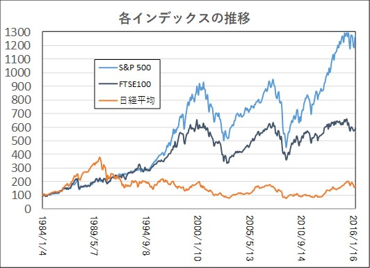
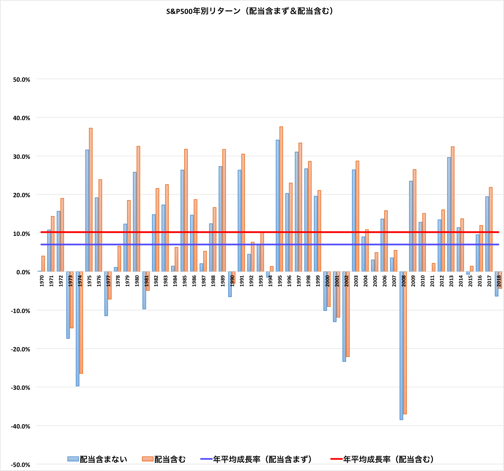

オススメ資産運用①:インデックス投資
index
インデックス投資とは、日経平均株価のような指数に連動した値動きを目指すファンドに投資する手法の事をいう。指数は数百～数千の会社の平均なので、広く分散して投資することが出来る。
また、その指数にもさまざまな種類がある。アメリカの上場企業500社の平均の「S&P500」や全世界の85%を網羅したMSCIオール・カントリー・ワールド・インデックスなどがある。
そのインデックスに長期(15年以上)毎月淡々と買い続ける手法を本サイトはお勧めしている。
インデックス投資なら、一国全体に分散投資のみならず、全世界分散投資もすることが出来る。
インデックス投資のメリット
図を見て分かるように、日本の様な長期停滞している稀な例を除いて、短期的に暴落等があっても、長期では右肩上がりに上がっている事がわかる。S&P500の1970~2018年の平均リターンは6.98%、配当金込みならば平均リターン10.22%もあったという。
10.22%が多い数字か、わかりづらいかもしれない。
もし、毎月たったの5万円を30年10.22%で複利運用しながら積み立てていたら1億1846万8641円になる。それほど一見大きくないリターンも複利運用すると絶大な力を持つ。
これがインデックス投資の長期積立のメリットだ。
インデックス投資のデメリット
上で述べたS&P500の1970~218年の平均リターンは6.98%、配当金込みならば10.22%という結果を図に表したものをみてみるとデメリットが見えてくる。
実は毎年確実に10.22%上がるのではなく、40%近く上がる年や40%近く下がる年もある。大きな乱高下を繰り返した結果平均10.22%という数字になる。
長期投資で続けていれば損をする可能性は低いといくら頭でわかっていても自分がコツコツと積み上げた資産が突然40%も減少したならば精神的余裕がなくなってしまう場合が多い。
多くの人は暴落時にさらなる暴落を恐れて株式を売り払ってしまう。
しかし、長期のインデックス投資家はそんな時でも淡々と毎月同じ額を買い続けるメンタルが必要になってくる。
これがインデックス投資のデメリットだ。
オススメ資産運用②:高配当投資
高配当
高配当投資とは企業の株価上昇による利益ではなく企業の配当金による収入をメインにした投資手法である。
自分で企業を選定してポートフォリオを組む手法もあるが、初心者に企業分析や将来性の予測は難しい。よって本サイトではあらかじめ高配当の企業を選定されたパックを購入する高配当ETF(上場投資信託)の積立をオススメしている。高配当投資の平均リターンはインデックス投資よりも少し低めの3~5%程度と言われている。
高配当投資のメリット
高配当投資は比較的安定して3~5%の金利収入があるので、収入の予測がしやすいという点がある。また、インデックス投資とちがって資産の増加ではなく収入(キャッシュフロー)の増加なので、自分の生活が豊かになっている実感を得やすいというメリットがある。 完全な不労所得が自分の口座に振り込まれるのをみる事になるので、インデックス投資より続けるインセンティブを感じやすく、精神的にも負担がすくない投資と言える。
高配当投資のデメリット
高配当投資はインデックス投資に比べて期待リターンも小さく、インデックス投資ほど分散もされてないのでリスクも大きくなる。また、海外株式の配当金には外国で課税され、日本でも課税される二重課税の問題もある。外国税控除という仕組みがあり、多少は帰ってくるのだが、手続きの手間などもデメリットにあげられる。インデックス投資の投資信託などは配当金を自動で再投資してくれたりするのだが、高配当ETFで配当金を再投資したい時は自分で購入する手間があるという点もある。
どちらがいいのか？
結論
どちらが正しいなどはない。それぞれの特色を理解して、どちらが自分に向いているかを考えて選択するのが良いと考える。 安定した利子所得がほしい人は高配当投資をすべきだし、20年後に自分の資産を最大化させたい人ならばインデックス投資を選ぶべきになる。 自分の理想とする生き方をまずは考え、それを実現するためのツールとして資産運用を活用しよう。